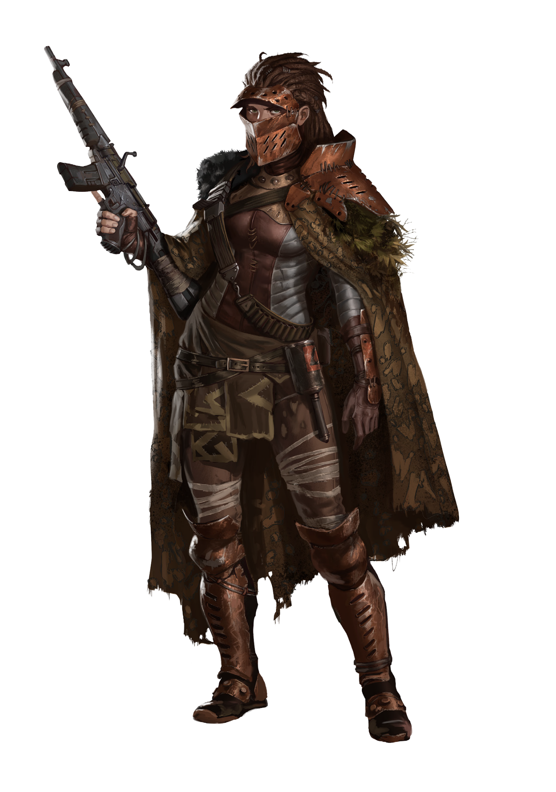

HUNTER / GATHERER CLAN
Corredores
Those who fight the Corredores battle their own future.
KatharSys p. 237

LUCIA
The Life Ahead
Lucia had only just seen 12 winters, but behind the girl’s soft face was a wrinkled old woman with the memories of a long lifetime. For in truth, she has had to bury four sons and three grandsons over 80 winters, and had survived Scourgers, the smallpox, and the creatures coming from the Atlantic Ocean. In her last days, she was overcome by a feeling of bitterness for the first time, the feeling of what could have been. She died lonely and had been happy about it.
But now she is a 12-year-old girl who rarely smiles, only when happy memories of the life that lies ahead of her rise up within her, for example the birth of her first son eight winters from now. When the Woman of the Mountain led the 68-years-older self of the girl back through time, she took away the happiness of youth, but gave her the ability to make a stand against fate. None of her children would have to die.
Little Lucia waves the Corredores over. Her voice is high-pitched as a girl’s, but it sounds firm when she explains her plan to the Clan. She remembers this attack, remembers all the dead. This time, everything will be different.
TOMORROW, TODAY, YESTERDAY
Once More, from the Top
The Corredores’ ancestors lived close to the shell caves in old Portugal. They did not falter when Pregnoctics rose from their ranks and settled in the caves. The Psychonauts shed their old identities and looked at their providers indifferently, but the parents clung to their past ties.
Generations came and went. The Corredores went to war against the Africans, built bridges between the treetops, camouflaged paths. Their scouts ran through the jungle and turned the scattered Guerrero camps into a powerful whole. It wasn’t powerful enough, however. The Scourgers attacked, burning down the forests, chasing the Guerreros to the Castilian high plateau.
Surge Tanks rumbled across cleared forest paths. Ancient fincas burned in a missile barrage. Hybrispania was vanquished.
Girls like little Lucia opened their eyes. All this lies in the future. Once more, from the top. At the age of 10, the girls of the Corredores go to the shell caves.
Only one percent of the children are blessed by the Pregnoctics. She is suffused with her own dying self: the young soul makes room for the old one and its memories of life. The other Corredores call these girls Sabia, the wise ones. They remember African forays and supply roads and use this knowledge to lead the Corredores into a battle that they have already been through, hoping to change its outcome.
DESTINY
Their Own Future
FEARLESS
The Vanguard
The Corredores are the vanguard of the Hybrispanian resistance. They are fearless because they consider this to be their first life. If they die, the Pregnoctics will gather their soul and plant it into their 10-year-old self in the past.
The Clan is splintered and spread all over Hybrispania, the Corredores go where the Sabias tell them to go. For them, fighting is the only form of culture. They have to fulfill their destiny before they can think of other concerns.
Maybe this is why many Corredores think La Campeadora is one of their own. Her providence is legendary, her origin a mystery. It’s not really far-fetched to think that she came from a shell cave in old Portugal.